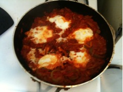

In a large frying pan, sauté onion and red pepper in olive oil until soft. Add tomatoes, garlic and spices. Let simmer, covered, for 30 minutes, then uncovered for another 10 or until thickened. Make a little indentation for each egg. Crack eggs and place on top of mixture sunny side up. Cover and continue to simmer for 5 minutes or until set. Serve immediately or keep warm.